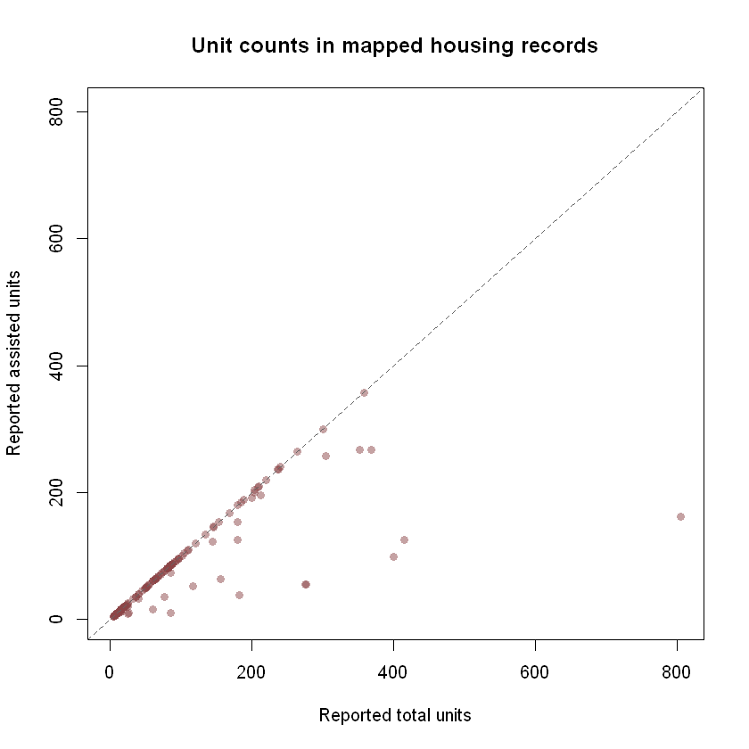

Explore housing and development activity
Source:vignettes/housing-development.Rmd
housing-development.RmdThis walkthrough asks: where are the cases in Tampa’s current development application map, and what statuses do its mapped records have? You will find a source, retrieve all its current records, check its fields, clean text values, and chart the neighborhoods named in the layer. A separate Pinellas County housing layer illustrates how a related question can require a different source. The package’s checked catalog is selective; these layers do not represent all housing or development in either county.
The catalog and schema chunks below run without network access when this page is built. Live chunks are shown but not run during package checks or the website build. Run them in order in an internet-connected R session. Their results and chart will reflect the publisher’s records at the time you run them. A dated, illustrative chart from a separate Pinellas analysis appears below; no record-level source data is bundled here.
Set up
Install the package from CRAN, knitr for the catalog
table, and ggplot2 for the chart. The installation commands
are not run when this page is built.
install.packages("tampaBayOpenData")
install.packages("knitr") # for the catalog table
install.packages("ggplot2") # optional tutorial dependencyFind a suitable layer
source = "checked" searches bundled entries offline.
Search several terms because a permit map, an active application view,
and a housing program inventory answer different questions. The exact
catalog results may change when the package is updated.
terms <- c("housing", "permit", "development")
matches <- lapply(terms, function(term) {
found <- tbod_search_datasets(term, source = "checked")
found$search_term <- term
found[, c("search_term", "id", "title", "publisher", "category",
"verified")]
})
catalog_hits <- do.call(rbind, matches)
knitr::kable(catalog_hits, row.names = FALSE)| search_term | id | title | publisher | category | verified |
|---|---|---|---|---|---|
| housing | pinellas-assisted-housing | Pinellas assisted housing | Pinellas County | Housing | 2026-10-05 |
| permit | construction-permits | Permits (active GIS view) | City of Tampa | Development | 2026-09-29 |
| development | development-cases | Active development coordination cases | City of Tampa | Development | 2026-09-29 |
| development | tbrpc-developments-of-regional-impact | Developments of regional impact | Tampa Bay Regional Planning Council | Development | 2026-10-05 |
| development | community-redevelopment | Community redevelopment areas | City of Tampa | Planning | 2026-10-02 |
| development | construction-permits | Permits (active GIS view) | City of Tampa | Development | 2026-09-29 |
| development | pinellas-assisted-housing | Pinellas assisted housing | Pinellas County | Housing | 2026-10-05 |
This tutorial uses the checked City of Tampa
development-cases entry, a point layer of active
entitlement applications. The checked
construction-permits entry is an active permit viewer with
CREATEDDATE and LASTUPDATE, but no advertised
permit issue-date field. Pinellas County’s
pinellas-assisted-housing entry describes an
assisted-housing program inventory, not every housing development. Read
each entry’s scope and reuse terms before choosing a source.
case_info <- tbod_dataset_info("development-cases")
case_info[c("publisher", "title", "source_url", "verified",
"scope_note", "terms")]
#> $publisher
#> [1] "City of Tampa"
#>
#> $title
#> [1] "Active development coordination cases"
#>
#> $source_url
#> [1] "https://arcgis.tampagov.net/arcgis/rest/services/Planning/ActiveEntitlementLocations/FeatureServer/0"
#>
#> $verified
#> [1] "2026-09-29"
#>
#> $scope_note
#> [1] "This is an active application view, not a historical ledger of all development cases. TENTATIVEHEARING and TENTATIVETIME are strings, despite their date-like names. No explicit dataset license was found on this exact FeatureServer service or in the selected public ArcGIS organization catalog. Do not infer the license of a separate MapServer layer."
#>
#> $terms
#> [1] "No explicit dataset license was found for this exact FeatureServer; its service iteminfo licenseInfo is empty. No license is inferred from a separate MapServer or the GeoHub site item. Source: https://arcgis.tampagov.net/arcgis/rest/services/Planning/ActiveEntitlementLocations/FeatureServer/info/iteminfo?f=pjson. City Conditions and Use says data is generally available to copy or distribute, subject to specified exceptions; it does not guarantee accuracy, completeness, or adequacy, and maps are reasonable representations rather than official records. Source: https://www.tampa.gov/about-us/tampagov/conditions-and-use."
case_schema <- tbod_schema("development-cases")
case_fields <- c("OBJECTID", "RECORDID", "APPSTATUS", "NEIGHBORHOOD",
"CREATEDDATE", "LASTUPDATE")
stopifnot(all(case_fields %in% case_schema$fields$name))
case_schema$fields[match(case_fields, case_schema$fields$name),
c("name", "type", "alias")]
#> # A tibble: 6 × 3
#> name type alias
#> <chr> <chr> <chr>
#> 1 OBJECTID esriFieldTypeOID OBJECTID
#> 2 RECORDID esriFieldTypeString Record ID
#> 3 APPSTATUS esriFieldTypeString Application Status
#> 4 NEIGHBORHOOD esriFieldTypeString Neighborhood
#> 5 CREATEDDATE esriFieldTypeDate Created Date
#> 6 LASTUPDATE esriFieldTypeDate Last Updateverified dates the catalog’s endpoint check, not the
freshness of each record. The saved schema lists
CREATEDDATE and LASTUPDATE as ArcGIS date
fields. APPSTATUS and NEIGHBORHOOD are text
fields; do not assume their values are standardized. If you need sources
beyond these checked entries, use
tbod_search_datasets("housing", source = "live") and
inspect the discovery result’s completeness and source terms as
described in the discovery article.
Retrieve and inspect current cases
Omitting limit requests the full matching layer. This
matters for a neighborhood comparison: an arbitrary first page would not
represent all mapped active cases. A three-minute operation budget
bounds the example. tryCatch() adds context if the service
is unavailable or its schema has changed; the code stops rather than
making a chart from partial data.
cases <- tryCatch(
tbod_get_dataset("development-cases", fields = case_fields,
total_timeout = 180),
error = function(e) {
stop("Could not retrieve Tampa active development cases: ",
conditionMessage(e), call. = FALSE)
}
)
case_source <- tbod_provenance(cases)
if (!isTRUE(case_source$complete) ||
!isTRUE(case_source$matched_rows == nrow(cases))) {
stop("The result is incomplete; do not interpret the chart.",
call. = FALSE)
}
case_source[c("source_url", "retrieved_at", "matched_rows",
"returned_rows", "integrity", "complete")]
utils::str(cases[, case_fields])
head(cases[, case_fields])RECORDID is the source’s case identifier and
OBJECTID identifies a mapped feature row. They may not have
the same grain. The following diagnostics keep missing labels and
repeated nonblank case IDs visible. We count mapped
rows, not unique projects or new housing units.
Clean and summarize
Trim whitespace and turn blank source labels into missing values.
ArcGIS date fields arrive as R date-time values; use the service’s
advertised Eastern time zone when deriving a local calendar date.
CREATEDDATE describes creation of a record in this active
view, not a permit issue or housing completion date.
clean_label <- function(x) {
out <- trimws(as.character(x))
out[is.na(out) | !nzchar(out)] <- NA_character_
out
}
case_data <- data.frame(
case_id = clean_label(cases$RECORDID),
status = clean_label(cases$APPSTATUS),
neighborhood = clean_label(cases$NEIGHBORHOOD),
created_date = as.Date(cases$CREATEDDATE, tz = "America/New_York"),
stringsAsFactors = FALSE
)
nonblank_ids <- case_data$case_id[!is.na(case_data$case_id)]
quality <- data.frame(
check = c("Mapped rows", "Missing case ID", "Repeated nonblank case ID",
"Missing status", "Missing neighborhood", "Missing created date"),
rows = c(nrow(case_data), sum(is.na(case_data$case_id)),
sum(duplicated(nonblank_ids)), sum(is.na(case_data$status)),
sum(is.na(case_data$neighborhood)),
sum(is.na(case_data$created_date)))
)
quality
status_counts <- sort(table(case_data$status, useNA = "ifany"),
decreasing = TRUE)
status_countsDo not automatically remove repeated case IDs: a case can have more than one mapped row, and dropping one could erase location information. Investigate those IDs and the source’s record definitions before claiming a count of distinct applications.
Chart the mapped neighborhoods
This chart uses the ten neighborhoods with the most mapped
rows in the current active view. It excludes rows with no
neighborhood label, whose count remains in quality. It is a
count of source features, not a population-adjusted rate, a citywide
total of development, or a measure of construction completed.
if (!requireNamespace("ggplot2", quietly = TRUE)) {
stop("Install ggplot2 to draw the neighborhood chart.", call. = FALSE)
}
named_neighborhoods <- case_data$neighborhood[
!is.na(case_data$neighborhood)
]
if (!length(named_neighborhoods)) {
message("The retrieved records have no neighborhood labels to chart.")
} else {
neighborhood_counts <- as.data.frame(table(named_neighborhoods),
stringsAsFactors = FALSE)
names(neighborhood_counts) <- c("neighborhood", "mapped_rows")
neighborhood_counts <- neighborhood_counts[
order(-neighborhood_counts$mapped_rows,
neighborhood_counts$neighborhood), , drop = FALSE
]
top_neighborhoods <- head(neighborhood_counts, 10)
top_neighborhoods$neighborhood <- factor(
top_neighborhoods$neighborhood,
levels = rev(top_neighborhoods$neighborhood)
)
print(top_neighborhoods)
neighborhood_plot <-
ggplot2::ggplot(top_neighborhoods,
ggplot2::aes(x = neighborhood, y = mapped_rows)) +
ggplot2::geom_col(fill = "#277DA1") +
ggplot2::coord_flip() +
ggplot2::labs(
title = "Mapped active development cases by Tampa neighborhood",
subtitle = paste("Top 10 labels; retrieved",
format(case_source$retrieved_at, "%Y-%m-%d", tz = "UTC")),
x = NULL, y = "Mapped feature rows",
caption = "Source: City of Tampa active development coordination cases"
) +
ggplot2::theme_minimal(base_size = 12)
print(neighborhood_plot)
}The plotted bars describe the records available at retrieval
time. Cases can enter or leave the active view, and some
neighborhoods may have missing labels or different mapping practices.
Larger counts do not prove more homes were built. A chart of
CREATEDDATE among today’s active cases would also exclude
earlier cases that have left the view, so it would not show a complete
historical trend in applications.
A related housing source answers a different question
Pinellas County’s checked pinellas-assisted-housing
layer reports fields such as CITY,
HOUSINGPROGRAM, TOTALUNITS, and
ASSISTEDUNITS. You can inspect its current records with the
same retrieval and provenance checks, then decide whether your question
concerns mapped program records or reported units. The code below is
deliberately a source inspection, not a sum of units: multiple polygons
or repeated parcel identifiers may represent the same site.
housing_info <- tbod_dataset_info("pinellas-assisted-housing")
housing_info[c("publisher", "source_url", "scope_note", "terms")]
#> $publisher
#> [1] "Pinellas County"
#>
#> $source_url
#> [1] "https://pinellas-egis.maps.arcgis.com/home/item.html?id=2277d597855b4fba9e4c3e892bc5ddd7"
#>
#> $scope_note
#> [1] "Program participation, assisted-unit counts, and subsidy expiration may change. This layer does not establish current eligibility, availability, or a complete affordable-housing inventory."
#>
#> $terms
#> [1] "The official County item offers data as-is for reference, says it is not of survey precision, and does not name an unrestricted reuse license. Source: https://pinellas-egis.maps.arcgis.com/sharing/rest/content/items/2277d597855b4fba9e4c3e892bc5ddd7?f=pjson"
housing_fields <- c("OBJECTID", "PID", "DEVELOPMENT", "CITY",
"HOUSINGPROGRAM", "TOTALUNITS", "ASSISTEDUNITS")
housing_schema <- tbod_schema("pinellas-assisted-housing")
stopifnot(all(housing_fields %in% housing_schema$fields$name))
housing_schema$fields[match(housing_fields, housing_schema$fields$name),
c("name", "type", "alias")]
#> # A tibble: 7 × 3
#> name type alias
#> <chr> <chr> <chr>
#> 1 OBJECTID esriFieldTypeOID OBJECTID
#> 2 PID esriFieldTypeString Parcel Number
#> 3 DEVELOPMENT esriFieldTypeString Development Name
#> 4 CITY esriFieldTypeString City
#> 5 HOUSINGPROGRAM esriFieldTypeString Housing Program
#> 6 TOTALUNITS esriFieldTypeSmallInteger Total Units
#> 7 ASSISTEDUNITS esriFieldTypeSmallInteger Assisted Units
housing <- tryCatch(
tbod_get_dataset("pinellas-assisted-housing",
fields = housing_fields, total_timeout = 180),
error = function(e) {
stop("Could not retrieve the Pinellas assisted-housing layer: ",
conditionMessage(e), call. = FALSE)
}
)
housing_source <- tbod_provenance(housing)
if (!isTRUE(housing_source$complete) ||
!isTRUE(housing_source$matched_rows == nrow(housing))) {
stop("The housing inventory result is incomplete.", call. = FALSE)
}
head(housing[, housing_fields])
Illustrative snapshot from the Pinellas County assisted-housing layer, retrieved October 6, 2026. Each point is a mapped record with usable unit counts, not necessarily a distinct housing site. This image is historical; run the live code above to inspect current records. Source: Pinellas County ArcGIS layer.
The separate Pinellas housing exploration checks unit-count pairs and repeated parcel IDs in more detail. That report uses live data and records the date of its observations; rerun it for a current analysis.
Reproducibility and limits
Keep case_source with any derived table or image; it
records the endpoint, retrieval time, row counts, and completeness
check. The checked schema and catalog are dated snapshots, while the
worked neighborhood chart uses live City of Tampa records when run. The
Pinellas chart above is a dated image from another analysis; no
record-level source data is bundled with this tutorial.
The Tampa layer is an active application view rather than a historical ledger of all development cases. It does not establish approvals, housing starts, completed construction, or units delivered. The Pinellas layer is a program inventory; it does not establish current eligibility, vacancies, or a complete affordable-housing inventory. Neither layer covers all of its publisher’s data, and the package’s checked catalog does not measure complete publisher coverage. See Data Coverage for verification status and selection limits. Continue with water quality or infrastructure and capital projects for other source-specific analysis patterns.